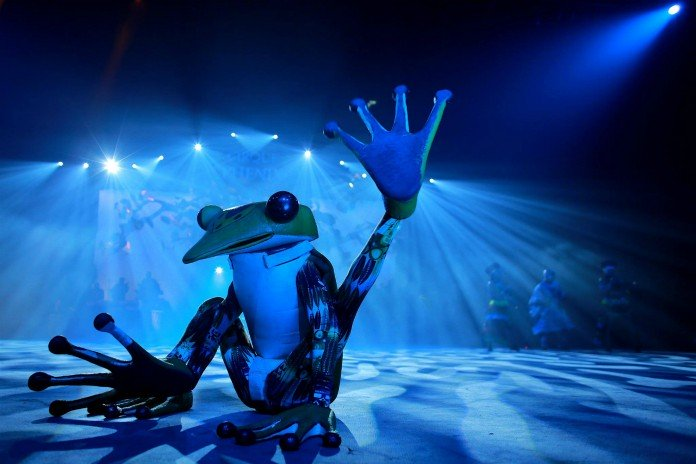

<div class='presentation'>
  <div class='container'>
    <h3>Un cirque écolo et sans animaux !</h3>
    
<p>Désormais sous notre chapiteau, on trouvera un cirque écologique, sans animaux !
La condition animale et plus particulièrement les conditions de vie des animaux de cirque font débat depuis plusieurs années. Dans l’art du spectacle, l’utilisation d’animaux en captivité a du mal à passer auprès du public, de plus en plus sensible à la cause animale.
En décidant d’arrêter les spectacles d’animaux, nous proposons un cirque alternatif et nous nous engegeons à ne plus exploiter d’animaux, sauvages comme domestiques.
Pas d’inquiétude pour ses anciens pensionnaires, ils ont tous été replacés dans des sanctuaires ou des pensions en France, pour une retraite bien méritée.
<a href='https://madeinmarseille.net/39128-parc-animalier-lion-tigre-fauve'>Suivre les retraités</a></p>


  <h3>Un cirque également engagé pour la planète</h3>
<p>La protection animale va de pair avec la protection de l’environnement. Sans prise de conscience écologique, le monde animal vit en sursis.
Pour le lancement de notre nouveau cirque, nous avons également pris des mesures écologiques.
Le transport du matériel sera désormais effectué uniquement par voie de fer ou maritime. Pour limiter l’impact carbone, le cirque aura également recours à de l’électricité solaire pour ses éclairages. La gestion des déchets sera aussi optimisée.
Il a dernièrement décidé de ne plus utiliser de cuir, de plumes ou de soie dans la confection de nos costumes.
Pour finir, des ateliers pédagogiques à destination des enfants seront organisés afin les sensibiliser à l’environnement.</p>

  </div>
</div>
